전국 1·2급 점역사
점자로 옮겨지는 신간 비율
교과서 한 권 점역 기간
책이 없는
자리가 있습니다.
시각장애 학생의 점자 교과서는 개학해도 준비되지 않습니다.
기존 점역 프로그램은 교열을 하지 않습니다.
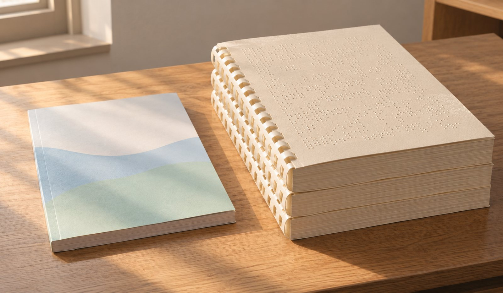
글자만 점자로 번역합니다
- 교열은 하지 않습니다. 띄어쓰기와 부호를 직접 고쳐야 합니다.
- 그림과 그래프는 손대 주지 않습니다.
- 단과 상자와 각주는 손으로 풀어야 합니다.
- 수식과 특수기호는 제대로 안 나올 때가 많습니다.
교열, 점역, 교정까지 처리합니다
- 복잡한 문서도 교열이 가능합니다.
- 그림과 그래프는 설명 초안을 여러 개 내 드립니다.
- 단과 상자, 각주를 읽는 순서대로 세워 둡니다.
- 수식과 특수기호는 규정 조항에 맞춰 점형을 냅니다.
교열, 점역, 교정까지 하나의 프로그램으로
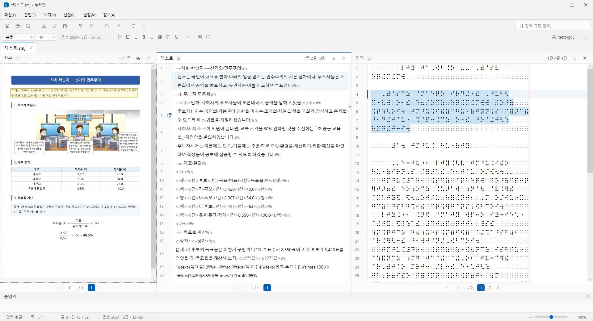
점자책 제작 과정
- 01파일 업로드
- 02교열
- 03점역
- 04조판
- 05교정
- 06출력 및 제본
누리닷 핵심 기능
교열
지금까지는 점자로 바꾸기 전에 띄어쓰기와 문장부호와 기호를 손으로 먼저 고쳐 놓아야 했습니다. 누리닷은 그 일을 묵자 단계에서 끝냅니다.
시각 자료
그림 하나를 글로 풀어 쓰는 데 가장 오래 걸립니다. 누리닷은 설명을 붙인 안과 생략한 안을 함께 내고, 자료 종류에 따라 최대 여덟 안 가운데 고르시게 합니다.
다단 레이아웃
단과 상자와 각주가 섞인 지면은 순서를 손으로 풀어야 했습니다. 누리닷은 그 요소들을 갈라내고 사람이 읽는 순서대로 다시 세웁니다.
수식과 특수기호
수식과 특수기호는 제대로 안 나와 칸 단위로 직접 입력하곤 했습니다. 누리닷은 점형마다 근거가 된 규정 조항과 원본 위치를 함께 보여 줍니다.
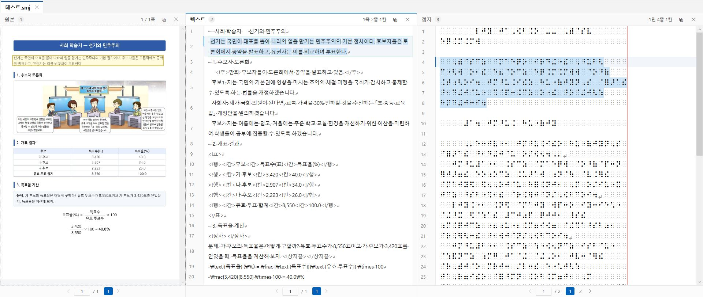
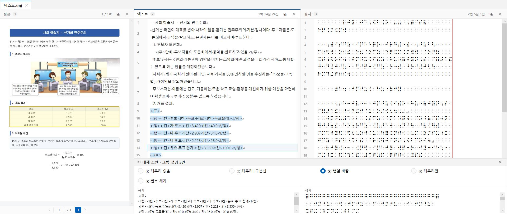
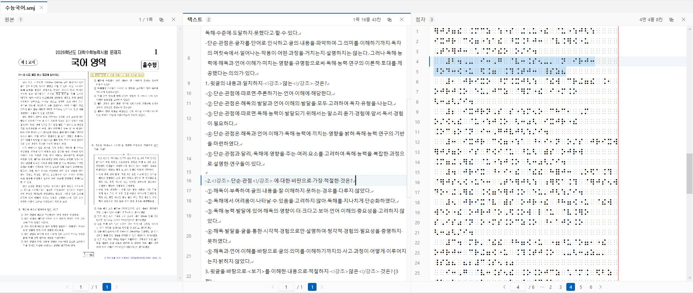
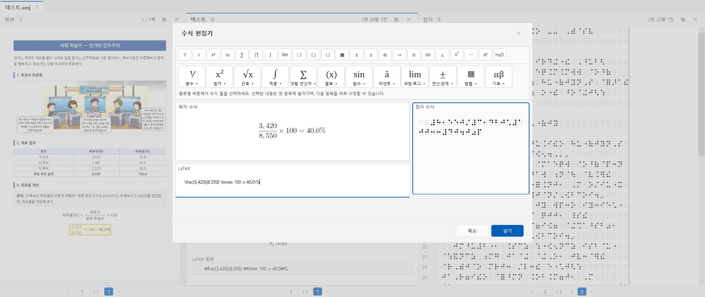
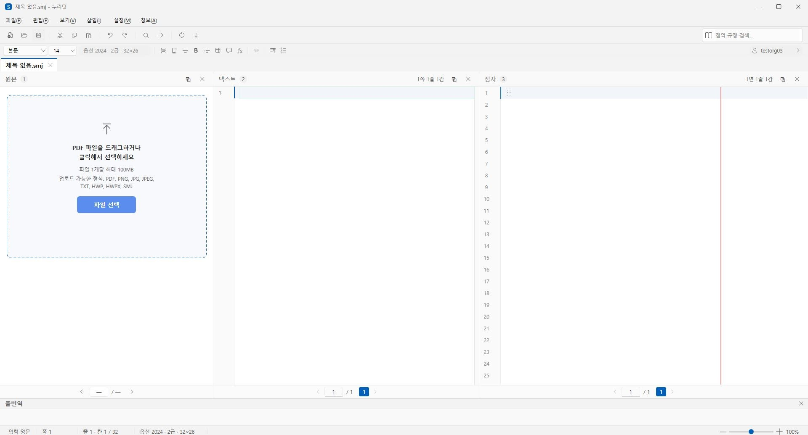
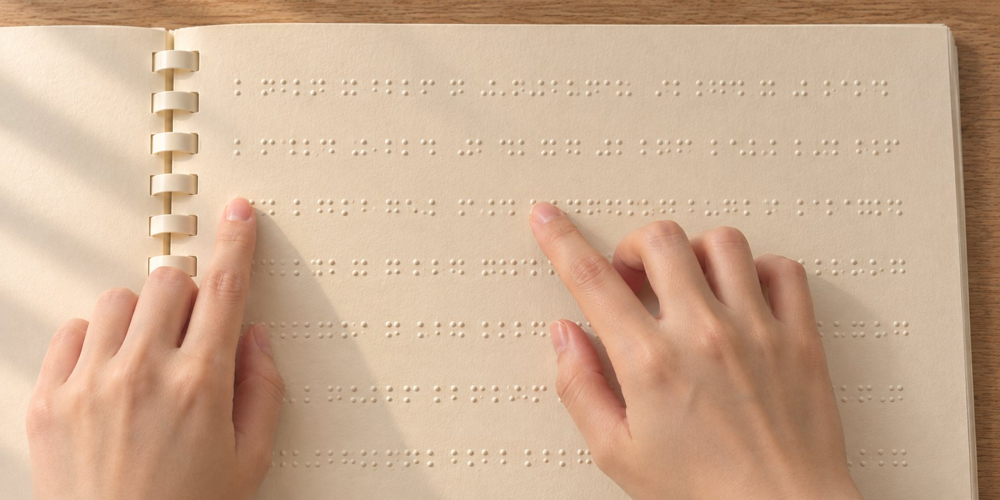
“‘T자형 계곡’은 그 모양을 본 사람에게나 자연스럽습니다. 본 적 없는 사람에게는 더 어려워집니다.”
현장 점역사
“AI 설명의 가장 큰 문제는 지나치게 장황하다는 것입니다.”
현장 점역사
수상·이력
2026
- 02
SKT FLY AI 챌린저 8기 「세모점」 프로젝트 우수상
- 05
아산나눔재단 아산 두어스 선정
- 06
교육부 U300+ 성장트랙 선발
- 06
중소벤처기업부 모두의창업 1기 선발
- 07
K-hackathon for Global 우수상
- 07
한국컴퓨터정보학회논문지 논문 등재
- 09
사회적가치 페스타 부스 운영
- 11
SKTCH for Good 참여기업 선정
- 11
주식회사 누리닷 법인 설립
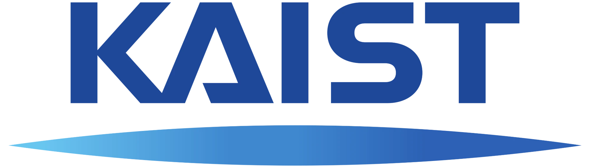
KAISTSK텔레콤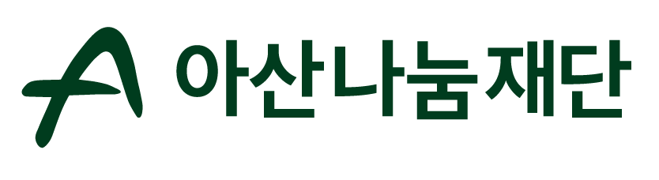
아산나눔재단교육부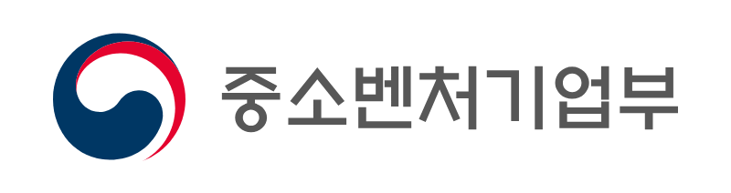
중소벤처기업부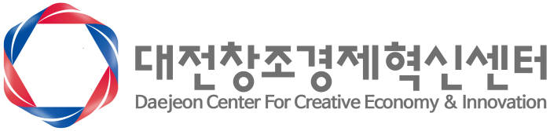
대전창조경제혁신센터요금제
꾸준히 점역하는 분에게 적합
Basic 요금제의 모든 기능 포함
- 월 300크레딧
- 한글·영어 1,2급 점자 제공
- 고급 교열 AI
- 동시 처리 속도 2배
- 서버 처리 우선순위 보통
점역이 본업인 분에게 적합
Standard 요금제의 모든 기능 포함
- 월 2,500크레딧
- 동시 처리 속도 4배
- 서버 처리 우선순위 높음
자주 받는 질문
기존에 쓰던 점역 프로그램과 같이 쓸 수 있나요?
같이 쓰실 수 있습니다. 누리닷에서 만든 파일은 BRF와 TXT, BRL로 내보낼 수 있어서 쓰시던 프로그램으로 가져가 이어서 작업하시면 됩니다.
어떤 파일을 올릴 수 있나요?
PDF와 PNG, 한글 문서와 워드 문서를 받습니다. 교재를 따로 손보지 않고 받으신 그대로 올리셔도 됩니다.
교재를 올려도 저작권에 문제가 없나요?
시각장애인 등을 위한 대체자료를 만드는 데 쓰시는 것을 전제로 제공합니다. 저작권법 제33조가 이 경우를 허용하고 있어서, 계약할 때 그 조항에 해당하는 시설인지와 영리 목적이 아닌지를 확인서로 받습니다. 대체자료 제작 밖의 용도로는 쓰실 수 없습니다.
올린 파일은 어떻게 보관되나요? AI 학습에 쓰나요?
올리신 교재와 저장하신 편집본을 AI 학습에 쓰지 않습니다. 쓰려면 기관의 서면 동의와 원저작권자의 이용허락이 둘 다 있어야 하고, 그때도 저작물마다 별도 계약으로 따로 정합니다. 약관에 동의하시는 것만으로는 학습에 쓰이지 않습니다. 보관 기간과 파기 절차는 개인정보 처리방침에 적어 두었습니다.
한 쪽에 얼마나 걸리나요?
보통 20초에서 2분 사이인데, 그 쪽에 무엇이 들어 있느냐에 따라 달라집니다. 글만 있는 쪽은 금방 끝나고, 그림이나 표가 섞인 쪽은 설명을 만들어야 해서 조금 더 걸립니다.
크레딧은 어떻게 차감되나요?
한 쪽을 변환할 때마다 줄어듭니다. 글만 있는 쪽보다 그림이 든 쪽이 더 드는데, 그림을 글로 풀어 쓰는 일이 따로 들어가기 때문입니다. 변환에 실패한 쪽과 중간에 취소하신 쪽은 차감하지 않습니다.
인터넷이 없어도 쓸 수 있나요?
점역은 컴퓨터 안에서 돌아가니까 연결이 끊겨도 됩니다. 다만 교열은 저희 서버를 쓰기 때문에 그때는 인터넷이 필요합니다.
점자 프린터로 바로 출력되나요?
BRF로 내보내시면 쓰시던 점자 프린터로 바로 보내실 수 있습니다. 조판은 한 줄 32칸에 맞춰 나옵니다.
결과가 틀리면 어떻게 알 수 있나요?
점형마다 어떤 규정 조항을 따랐는지, 원본의 어느 자리에서 왔는지가 함께 붙습니다. 사람이 판단해야 할 자리에는 표시를 남기니까 처음부터 다시 읽지 않으시고 표시된 곳만 보시면 됩니다.
점역사가 아닌 사람이 써도 되나요?
나오는 것은 초안이라 점역사의 검수를 거치셔야 합니다. 최종 이용자에게 드리기 전에 자격을 갖춘 점역사가 확인하시는 것을 전제로 만들었고, 이용약관에도 그렇게 적어 두었습니다.
촉각 그래픽도 만들어 주나요?
촉각 그래픽은 만들지 않습니다. 누리닷이 하는 일은 그림이나 그래프를 글로 풀어 쓰는 데까지고, 그다음은 점역사께서 판단하실 몫으로 남겨 둡니다.
영어 교재도 되나요?
영어 2급 점자는 모든 요금제에서 쓰실 수 있고, 1급 점자는 Standard 요금제부터 풀립니다.
맥에서도 되나요?
아직은 어렵습니다. 지금은 Windows 10과 11의 64비트에서만 돌아갑니다.
기관 단위로 도입하려면 어떻게 하나요?
아래 문의 양식으로 보내 주시면 됩니다. 기관에는 무상 체험을 1주일 드리고 있고, 보내 주신 내용은 영업일 하루 안에 회신드립니다.
결제는 어떻게 하나요?
카드 결제는 아직 열지 않았습니다. 기관은 먼저 문의 주시면 상의한 뒤 세금계산서로 처리해 드립니다.